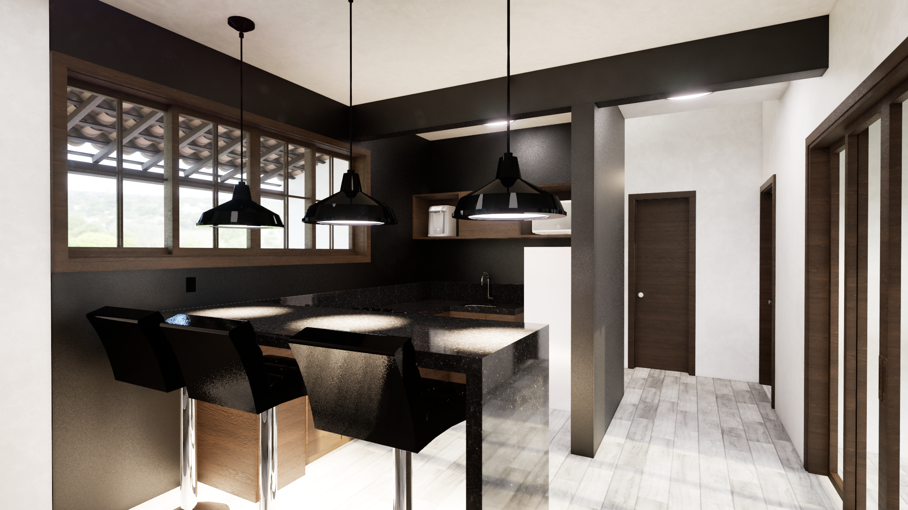

Chalé de Furnas
O Chalé de Furnas foi um projeto feito em Revit e renderizado no Twinmotion. Com o conceito de ser um chalé para passar finais de semana apresenta uma pequena sala com tv e uma bancada de bar integrada com a cozinha.
Com uma porta de vidro central e grande propoẽ-se uma comunicação do interior do chalé com a varanda. O pequeno corredor dá acesso privativo aos quartos e banheiro e possui uma claraboia para iluminação.